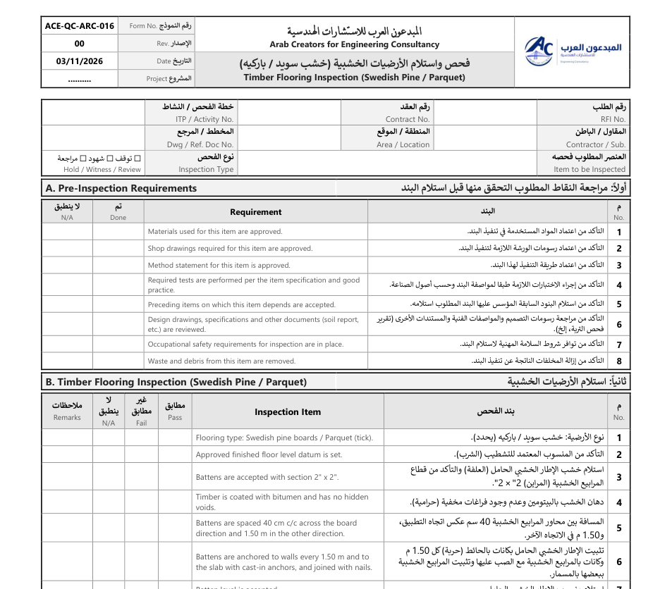

تحميل الملف مجانًاملف وورد قابل للتعديل، عربي وإنجليزي
بعض البنود اللي بيغطيها النموذج
- نوع الأرضية: خشب سويد / باركيه (يحدد).
- التأكد من المنسوب المعتمد للتشطيب (الشرب).
- استلام خشب الإطار الخشبي الحامل (العلفة) والتأكد من قطاع المرابيع الخشبية (المراين) 2" × 2".
- دهان الخشب بالبيتومين وعدم وجود فراغات مخفية (حرامية).
- المسافة بين محاور المرابيع الخشبية 40 سم عكس اتجاه التطبيق، و1.50 م في الاتجاه الآخر.
- تثبيت الإطار الخشبي الحامل بكانات بالحائط (حربة) كل 1.50 م وكانات بالمرابيع الخشبية مع الصب عليها وتثبيت المرابيع الخشبية ببعضها بالمسمار.
- استلام منسوب الإطار الخشبي الحامل.
- نظافة الرمل المستخدم في ردم الإطار الخشبي الحامل والردم حتى منسوبها.
طريقة الاستخدام
اكتب بيانات المشروع ورقم النموذج في الرأس، وعلّم على كل بند (مطابق، غير مطابق، لا ينطبق) أثناء المعاينة في الموقع، واكتب الملاحظات في العمود المخصص، ثم يوقّع المقاول والاستشاري. احتفظ بالنموذج مع طلب الفحص (RFI) في ملف البند.
النماذج من إعداد فريق المبدعون العرب للاستشارات الهندسية، ومسموح استخدامها وتعديلها في مشاريعك. يمنع إعادة نشرها أو بيعها.